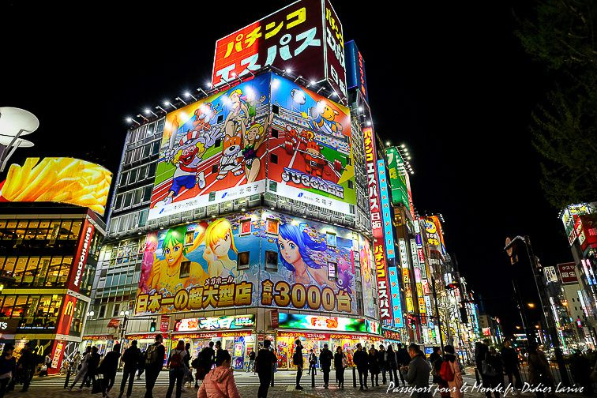

Tokyo, Japon
Tokyo, la capitale animée du Japon, est une métropole fascinante qui mélange harmonieusement tradition et modernité. Explorez les contrastes uniques de cette ville dynamique, où les gratte-ciels futuristes côtoient des temples anciens et des jardins paisibles.
Imprégnez-vous de la culture japonaise en visitant des sites emblématiques tels que le temple Asakusa Senso-ji et le sanctuaire Meiji-jingu. Plongez dans la frénésie de quartiers animés comme Shibuya, célèbre pour son intersection de rue la plus fréquentée au monde, et découvrez une scène culinaire diversifiée allant des stands de rue aux restaurants étoilés au guide Michelin.
Admirez la vue panoramique depuis la tour Tokyo Skytree, la plus haute tour autoportante du monde, et profitez de la sérénité des jardins impériaux de Tokyo. Avec son mélange éclectique de culture, d'architecture et de cuisine, Tokyo offre une expérience de voyage inoubliable à chaque coin de rue.
Informations supplémentaires :
- Population : environ 14 millions
- Langue : Japonais
- Monnaie : Yen japonais (JPY)
- Climat : Tempéré
- Meilleure période pour visiter : De mars à mai (printemps) et de septembre à novembre (automne)